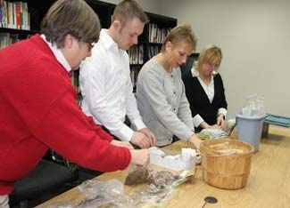

Have you ever participated in a community seed swap? If not, you’re missing out on a great gardening resource - and a ton of fun, too. There are lots of benefits to swapping seeds with neighbors, and you can read more about them in my earlier article, Swap Seeds This Season.
So now, how about some step-by-step instructions for organizing a seed swap of your own? If you already know other gardeners in your area, you’re well on your way to setting up a fun event that will get everyone in your neighborhood started down the path to Master Gardener!
1. Choose a time and place. Depending on how many people you think may attend, it might be coziest to host the seed/plant swap in someone’s home or garden. (Reserve tables, chairs and tents, too, if necessary.) Or, if you expect to draw a larger crowd, look for free spaces you can reserve, such as a public library meeting room or a church basement.
2. Publicize your seed swap. A good place to start is by notifying local gardening groups and botanic gardens, and you can also reach interested people through classified ads, grocery cooperative newsletters, community bulletin boards and chamber of commerce calendars. We can help you publicize your seed swap, too! Post your event in our online event calendar or learn about how we can e-mail Mother Earth News readers in your area to notify them of your community seed swap.
3. Invite speakers. Contact your local gardening groups to find experts who know how to save different kinds of seeds, and can get folks fired up about why to save and share seeds. Extension agents also can give great tips on gardening in your specific region. Another excellent discussion topic would be about how to start seeds and transplant new seedlings.
4. Request seed donations from local gardeners or seed companies in advance, to bolster the offerings that people will bring.
5. Print off some handy articles from MotherEarthNews.com about seed-saving and other gardening techniques to distribute to the gardeners who attend your seed swap. (You have our permission!) You can search our complete gardening archive, or check out of some of these editors’ picks:
* Grow Your Own Seeds
* Savvy Seed Care
* Seed-starting Basics
* Best Seeds for a Bigger, Better Garden
6. Label everything clearly. Bring plenty of little dishes, or baggies and markers, to help gardeners divvy up and identify everything. Ask seed and plant donors to write down everything they know about their seed that might be helpful to donees. For example: “Green Zebra Tomato: open-pollinated, heirloom, saved from last season, has grown well in my garden for years, heavy producer, medium-size fruit, indeterminate growth habit, about 70 to 80 days to maturity, good slicer, amazing tart flavor, attractive green and yellow stripes.” It may help to give your donors notecards that they can fill out, with all these variables. They may not know all the answers, but any information could be helpful. A seed swap is all about learning from each other, after all.
7. Host a contest to make the event more fun! Prizes could go to the gardener with the widest variety of seeds, the attendee who traveled the farthest, the youngest or oldest gardener, etc. And we’ll help you with a little contest: The gardener who brings the widest variety of heirloom tomato seeds will win one of our NRG ergonomic garden trowels! (E-mail OrganicGardening@MotherEarthNews.com with the subject line “Seed Swap Contest,” and we’ll help you set this up.)
8. When it’s all over, let us know how it went. So you organized a smashing success of a seed swap, right? Please post your story in the comments section below so that others may learn from your experiences.
|
 MATTHEW T. STALLBAUMER At local seed exchanges, you can give and receive hard-to-find and unusual garden seeds and plants, such as rare heirloom vegetables. You can also save money that you would have spent on more common, trusty-dusty plants like beefsteak tomatoes. |
|
|